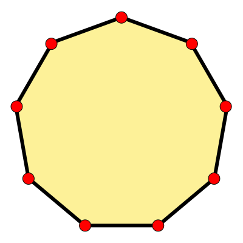
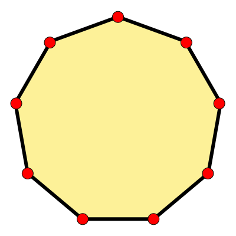

¡GENIAL! Has superado el segundo nivel de dificultad, seguro que eras el primero de clase en levantar la mano
en clase de geografia cuando el profesor preguntaba ¿o me equivoco?
Este nivel es sobre matemáticas
Contesta la pregunta para poder llegar al siguiente mundo y cumplir tu destino de llegar a la Tierra.
MATEMÁTICAS
Se denomina polígono regular a un polígono cuyos lados y ángulos interiores son iguales entre sí.
¿Cual de estas figuras es un dodecagono?
 
